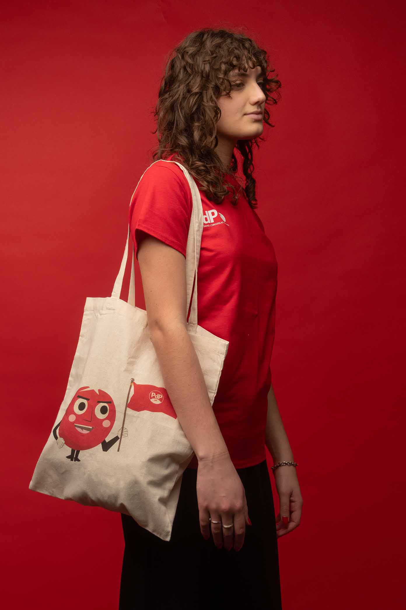
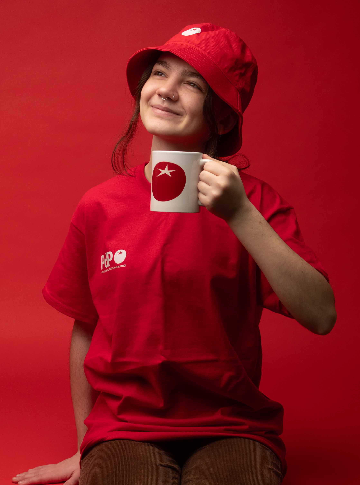
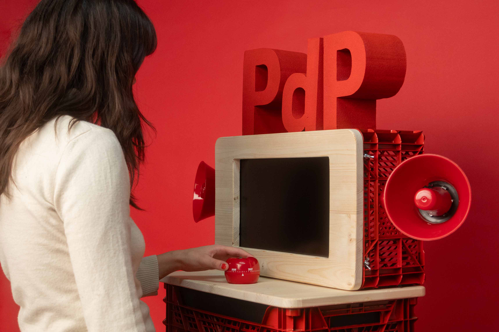

Starting from the assigned topic, the tomato, we were tasked to imagine
a detailed hypothetical future and develop a communicative project inspired
by the imagined scenario. This type of speculative design has the goal of provoking a critical reflection
on ethical, social, political and economic issues.
Partito del Pomodoro, or PdP, is a nationalist party that idolizes the tomato
as a symbol of Italian cuisine and tradition, with the goal of promoting
exploitation. Led by the charismatic tomato-leader Pomì, the PdP spreads
its ideology through the R.O.S.S.A., a device that allows its supporters, known
as “pummaroli,” to visualize the changes the party seeks to implement.
The project reflects on specific issues such as grastronationalism, populism, and caporalato,
and the way they influence the political landscape of Italy.
The visual language was designed to evoke the matter-of-fact quality of Italian political communication while maintaining a high design standard. Using illustration allowed us to create a “face of the party”, which is typically a central element in these kind of communication strategies.
The videos function as propaganda within the narrative of the project.
The premise that we created was that
of a news report delving into the rising popularity of the PdP, documenting the party's
event to launch the R.O.S.S.A. (Rigogliosa Opera Sociale per Salvare l'Agricoltura).
The machine showcases the proposed measures for each region and allows
supporters, known as “pummaroli,” to register as party members.
Teaser
Full Video






